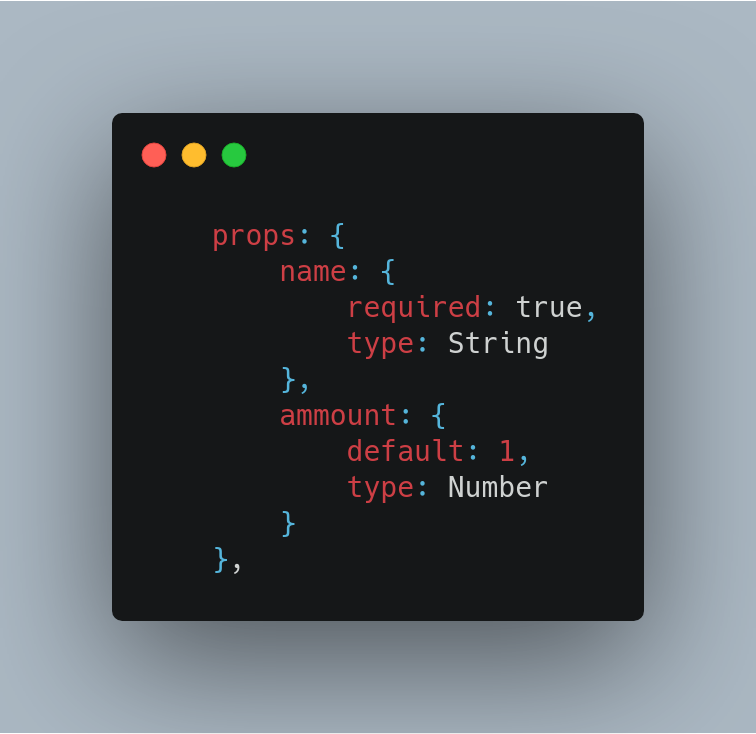
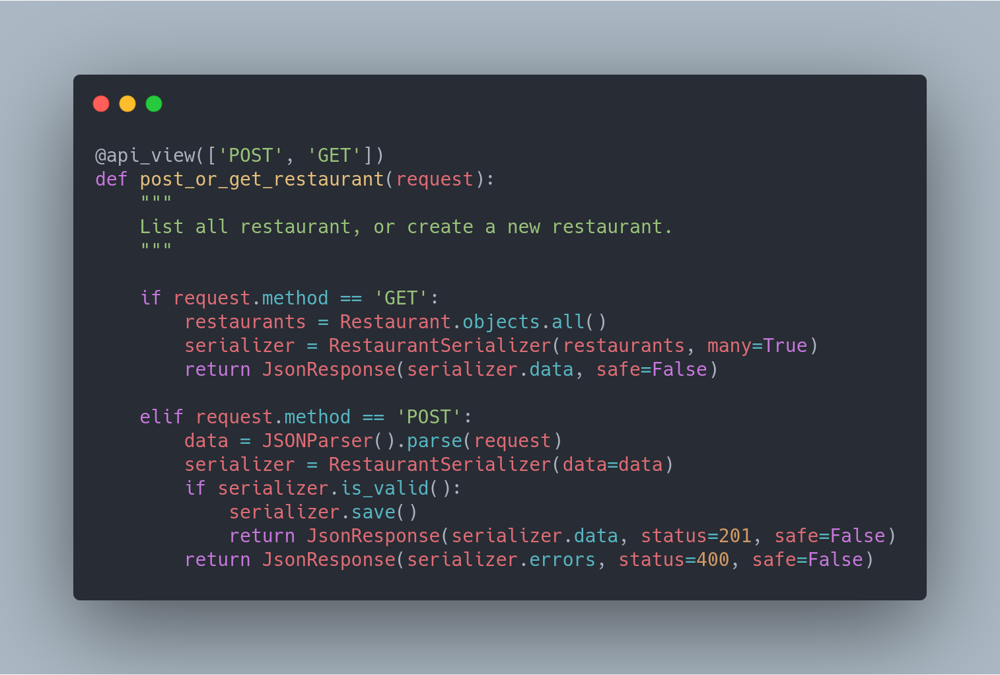

Estruturais
Histórico de Revisão
| Data | Versão | Descrição | Autor |
|---|---|---|---|
| 24/10/2019 | 0.1 | Tópicos Facade, Composite e Flyweight | Pedro Féo |
| 24/10/2019 | 0.1 | Adição do Adapter | Pedro Rodrigues |
| 24/10/2019 | 0.2 | Adição do Decorator | Guilherme Marques Saleh Kader |
| 15/11/2019 | 0.5 | Adicionar link ao código do Facade | Pedro Féo |
Facade

Esse padrão é utilizado como uma forma de prover uma interação simplificada para um subsistema complexo da aplicação. O uso de facade é adequado no caso da necessidade de se comunicar com dezesnas de features diferentes.
Como foi utilizado no projeto
Foi criado um Service Facade, que possuia um conjunto de serviços a serem utilizados

Objetivo & problema sanado
O Facade foi utilizado para facilitar o processo de comunicação com os serviços do back-end, assim o desenvolvedor não precisa se preocupar com a localização e funcionamento do serviço em si, apenas em chama-lo da seguinte forma:
Passa a ser:

Encontrado no front-end
Composite
Esse padrão permite a composição de objetos em uma estrutura de árvore, depois utilizando essas estruturas como objetos individuais.
Como foi utilizado no projeto
O padrão composite faz parte da arquitetura padrão do Vue, onde componentes possuem uma estrutura de árvore, em que um componente é capaz de conter diversos outros.
Objetivo & problema sanado
O uso de composite na arquitetura padrão do vue se deve a facilidade de reutilização de componentes, componentes individuais passam a poder ser utilizados em diversas partes do código, evitando reutilização de código.
Flyweight
Esse padrão visa a performance do seu software, ele estabelece que informações podem ser compartilhadas entre objetos, em vez de fazer com que cada objeto precise inicializar esse dado.
Como foi utilizado no projeto
O Flyweight, assim como o Composite faz parte da arquitetura padrão do Vue. O Vue utiliza o que chama de props para que possa passar informações pela sua estrutura de árvore, então um dado pode percorrer toda a árvore, assim uma mudança da informação no começo da árvore consegue afetar o seu restante.
Objetivo & problema sanado
O uso desse padrão tem como objetivo diminuir a quantidade de informação salva na aplicação, fazendo com que um dado seja compartilhado em diversos componentes.

Decorator
O Decorator é um padrão de projeto estrutural, que permite acrescentar novos comportamentos a métodos de forma dinâmica. Os decoratos permitem estender o funcionamento de um método.
Como foi utilizado no projeto
O Decorator foi utilizado pensando nos verbos de requisições do protocólo HTTP. Estendendo os métodos criados, para permitir a flexibilidade dos métodos de acordo com o tipo de requisição solicitada.

Objetivo & problema sanado
O uso desse padrão permite o controle do tipo de requisição dentro dos métodos, garantindo a sua segurança e impedindo, por exemplo, que uma requisição do tipo 'DELETE' seja tratada por uma função concebida para o tratamento do tipo 'POST'.
Adapter
Esse padrão como o próprio nome sugere se trata de um adaptador de um objeto para uma interface a qual ele seria incompatível. Ou seja ele tem como objetivo alterar um objeto até ele possa interagir com o subsequente desejado.
Como foi utilizado no projeto
Ao utlizar Django Rest, ele proporciona os serializers, os quais transformam objetos json em objetos do tipo Model Django. No projeto é visto que os serviços possuem classes com seus atríbutos os quais são definidos em uma Model, assim sendo os serializer se fazem necessário uma vez que se deseje a adequação dos dados a um formato json.
Objetivo & problema sanado
Essa funcionalidade é vista em praticamente todos os serviços. Já que eles demandam dados e uma modelagem dos mesmos em Models. Utilizando o padrão já oferecido pelo Django é possível enxergar o adapter.
Referências
[1] Erich Gamma, Richard Helm, Ralph Johnson, John Vlissides (1994). Design Patterns: Elements of Reusable Object-Oriented Software